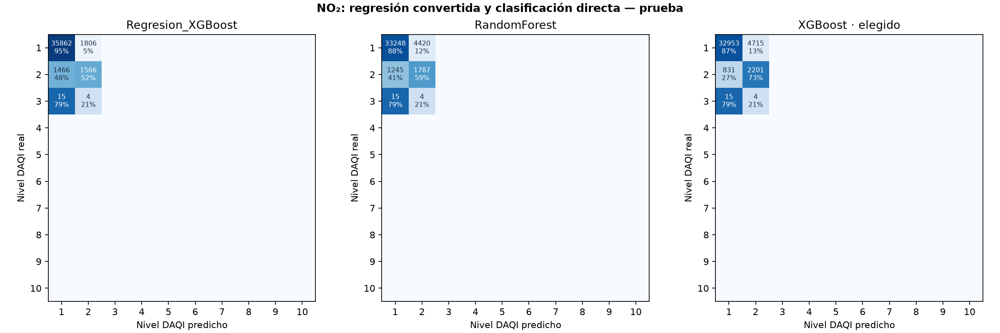
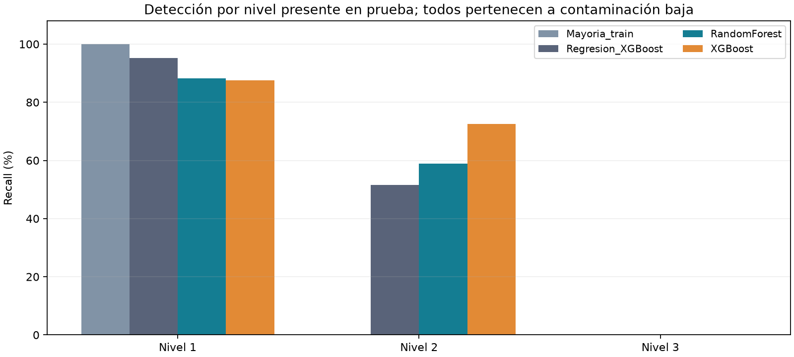

Piloto: clasificación directa de NO₂
El clasificador elegido por validación fue XGBoost. En prueba, su F1 macro sobre clases presentes es 0.4548, frente a 0.4816 del método de regresión convertido (diferencia -0.0268). Accuracy 86.33% y balanced accuracy 53.36%.
Método y límites
- Un clasificador de NO2 compartido entre estaciones; la estación es una entrada. La salida es el nivel británico, no una concentración ni una categoría diaria conjunta.
- Se reutilizan las mismas 59 entradas, objetivos medidos/censurados y filtros de plausibilidad. NO2 y los otros contaminantes no son predictores. Las concentraciones originales se conservan.
- Entrenamiento anterior a 2024; validación en 2024; prueba desde 2025, con la misma purga de dos días. Pesos y codificación de clases se calculan sólo con entrenamiento. Los modelos y el exponente de ponderación se eligen únicamente por F1 macro de validación; no se retocan después de ver el test.
- Se prueban pesos sin balancear, raíz de frecuencia inversa y frecuencia inversa completa. Todos se normalizan a media uno. No se crean ejemplos sintéticos ni se balancean validación y prueba.
- Las clases ausentes de entrenamiento no pueden aprenderse: conservan probabilidad cero y se indican en el manifiesto. Se codifican las presentes y se decodifican para no desplazar los niveles DAQI.
- Validación y prueba sólo contienen niveles 1, 2 y 3, todos de contaminación baja. No puede concluirse que el piloto detecte episodios moderados, altos o muy altos. El nivel 3 sólo tiene 19 ejemplos en test: sus métricas son inestables.
- F1/precision/recall macro promedian los diez niveles fijos y usan cero para clases no evaluables. Las variantes macro_supported consideran sólo niveles reales presentes. Se muestran ambas. FPR se calcula por clase contra el resto; cero FPR no garantiza detección.
- Se mantiene la conversión NO2 ppb × 1.9125 a µg/m³ y el redondeo único DAQI. Las cuatro bandas se evalúan aparte; en test todos los objetivos pertenecen a la banda baja.
- Los algoritmos siguen usando meteorología ERA5 histórica. No se evalúa aún el error adicional de pronósticos meteorológicos a 24/48 h. Las probabilidades del clasificador no están calibradas.
- El período de prueba ya se había inspeccionado al proponer este piloto: esta comparación es exploratoria. Una confirmación independiente requiere datos posteriores o un nuevo diseño de evaluación temporal.
Comparación en prueba: diez niveles fijos
| model |
n |
accuracy |
precision_macro |
recall_macro |
f1_macro |
f1_macro_supported |
balanced_accuracy |
false_positive_rate_macro |
| Regresion_XGBoost |
40719 |
0.9192 |
0.1424 |
0.1469 |
0.1445 |
0.4816 |
0.4895 |
0.0533 |
| Mayoria_train |
40719 |
0.9251 |
0.0925 |
0.1000 |
0.0961 |
0.3204 |
0.3333 |
0.1000 |
| RandomForest |
40719 |
0.8604 |
0.1251 |
0.1472 |
0.1308 |
0.4360 |
0.4907 |
0.0530 |
| XGBoost |
40719 |
0.8633 |
0.1293 |
0.1601 |
0.1365 |
0.4548 |
0.5336 |
0.0403 |
Detalle por nivel del clasificador elegido
| category |
support |
predicted_count |
precision |
recall |
f1 |
false_positive_rate |
tp |
fp |
fn |
tn |
| 1 · Baja |
37668 |
33799 |
0.9750 |
0.8748 |
0.9222 |
0.2773 |
32953 |
846 |
4715 |
2205 |
| 2 · Baja |
3032 |
6920 |
0.3181 |
0.7259 |
0.4423 |
0.1252 |
2201 |
4719 |
831 |
32968 |
| 3 · Baja |
19 |
0 |
no evaluable |
0.0000 |
0.0000 |
0.0000 |
0 |
0 |
19 |
40700 |
| 4 · Moderada |
0 |
0 |
no evaluable |
no evaluable |
no evaluable |
0.0000 |
0 |
0 |
0 |
40719 |
| 5 · Moderada |
0 |
0 |
no evaluable |
no evaluable |
no evaluable |
0.0000 |
0 |
0 |
0 |
40719 |
| 6 · Moderada |
0 |
0 |
no evaluable |
no evaluable |
no evaluable |
0.0000 |
0 |
0 |
0 |
40719 |
| 7 · Alta |
0 |
0 |
no evaluable |
no evaluable |
no evaluable |
0.0000 |
0 |
0 |
0 |
40719 |
| 8 · Alta |
0 |
0 |
no evaluable |
no evaluable |
no evaluable |
0.0000 |
0 |
0 |
0 |
40719 |
| 9 · Alta |
0 |
0 |
no evaluable |
no evaluable |
no evaluable |
0.0000 |
0 |
0 |
0 |
40719 |
| 10 · Muy alta |
0 |
0 |
no evaluable |
no evaluable |
no evaluable |
0.0000 |
0 |
0 |
0 |
40719 |
Resultados por estación del clasificador elegido
| station |
n |
accuracy |
precision_macro |
recall_macro |
f1_macro |
f1_macro_supported |
balanced_accuracy |
false_positive_rate_macro |
| centenario |
13874 |
0.9897 |
0.1010 |
0.1008 |
0.1009 |
0.5043 |
0.5038 |
0.0992 |
| cordoba |
13325 |
0.8875 |
0.1138 |
0.1348 |
0.1178 |
0.3926 |
0.4494 |
0.0662 |
| la_boca |
13520 |
0.7098 |
0.1306 |
0.1501 |
0.1297 |
0.4322 |
0.5002 |
0.0500 |
Resultados de validación usados para comparar enfoques
| model |
n |
accuracy |
precision_macro |
recall_macro |
f1_macro |
f1_macro_supported |
balanced_accuracy |
false_positive_rate_macro |
| Regresion_XGBoost |
16976 |
0.8864 |
0.1716 |
0.1440 |
0.1525 |
0.5082 |
0.4799 |
0.0559 |
| Mayoria_train |
16976 |
0.8212 |
0.0821 |
0.1000 |
0.0902 |
0.3006 |
0.3333 |
0.1000 |
| RandomForest |
16976 |
0.8709 |
0.1556 |
0.1589 |
0.1572 |
0.5239 |
0.5298 |
0.0410 |
| XGBoost |
16976 |
0.8759 |
0.1569 |
0.1668 |
0.1610 |
0.5368 |
0.5559 |
0.0332 |
Matrices de confusión

Recall por nivel

Fuentes